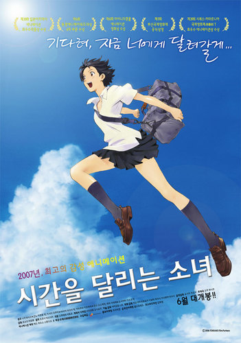

애니메이션
; 만화나 인형을 이용하여 그것이 마치 살아 있는 것처럼 생동감 있게 촬영한 영화. 또는 그 영화를 만드는 기술.시간을 달리는 소녀 (The Girl Who Leapt Through Time, 2006)

- 개봉일 : 2007.06.14
- 감독 : 호소다 마모루
- 각본 : 오쿠데라 사토코
- 출연 : 나카 리이사, 이시다 타쿠야, 이타쿠라 미츠타카, 카키우치 아야미, 타니무라 미츠키, 하라 사치에, 세키도 유키
- 줄거리 : 어느날 우연히 타임리프 능력을 갖게 된 '마코토'. 능력을 사용하며 순탄한 삶을 살아가던 그때, 친한 친구인 '치아키'에게 느닷없는 사랑고백을 받는다. 그 고백을 없던 일로 만들기 위해 타임리프 능력을 사용하는 마코토. 하지만 일은 점점 꼬여만간다.
나의 감상평 : 여름이 되면 이 영화를 꼭 챙겨볼만큼 이 영화는 여름하면 생각나는 좋은 점만이 가득 들어있는 영화다.
치아키는 너무 매력 있고, 마코토의 짦은 머리와 마른 몸은 캐릭터성을 뚜렷하게 보여주고, 영화의 하이라이트와 엔딩 장면에서 나오는 노래는 사람의 마음을 아련하고 벅차게 만든다.
내가 치아키에게 마지막 말을 들은 것마냥 관객들은 영화가 끝나고 나서도 긴 여운을 느끼고, 그게 이 영화를 여름하면 생각나는 애니메이션 영화로 만드는 것 같다.